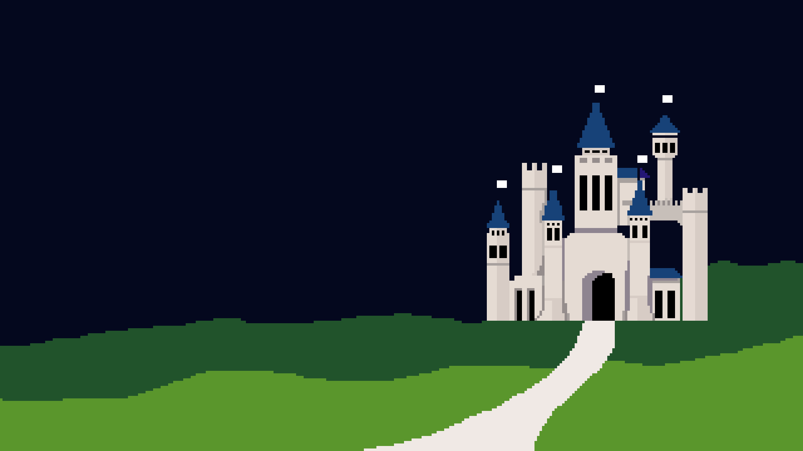
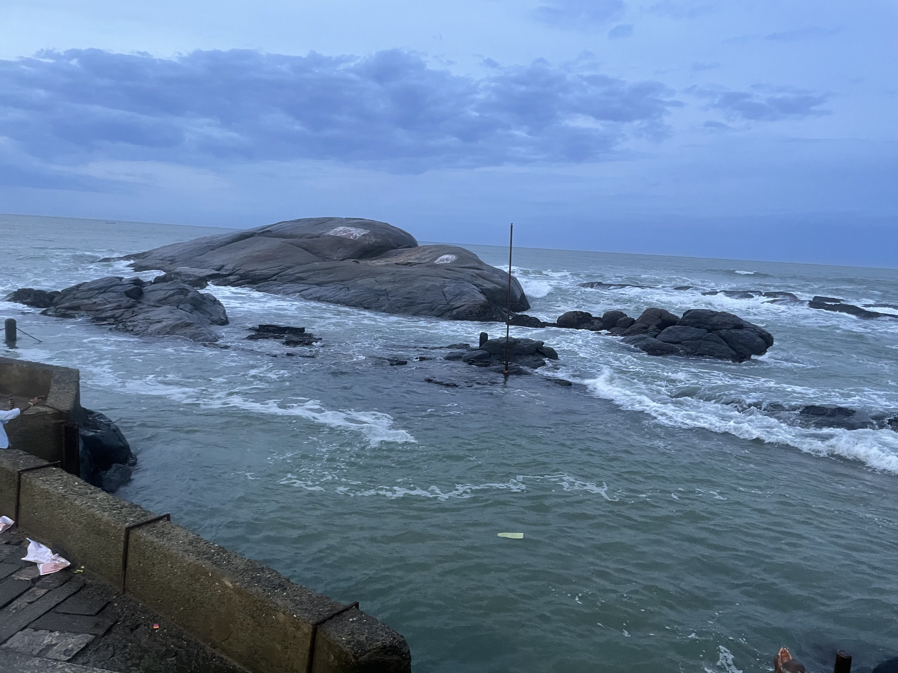
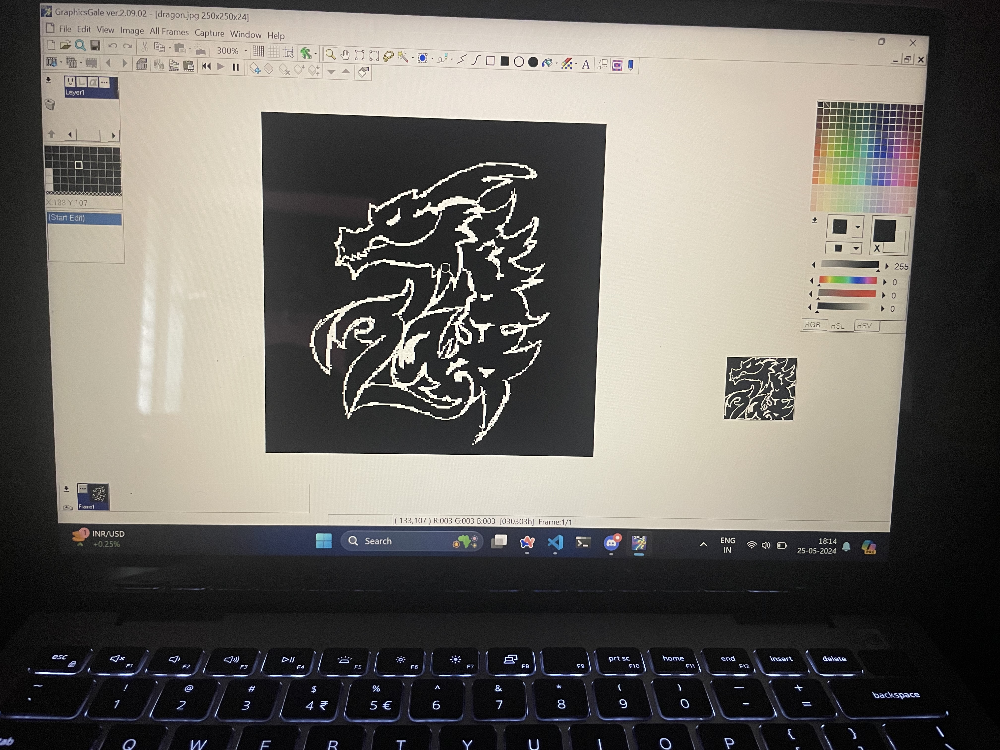
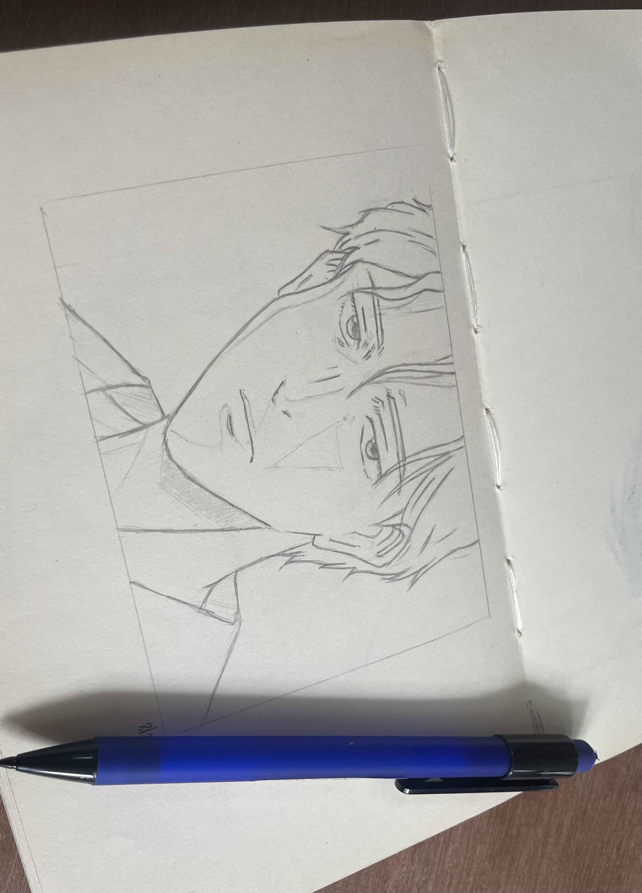
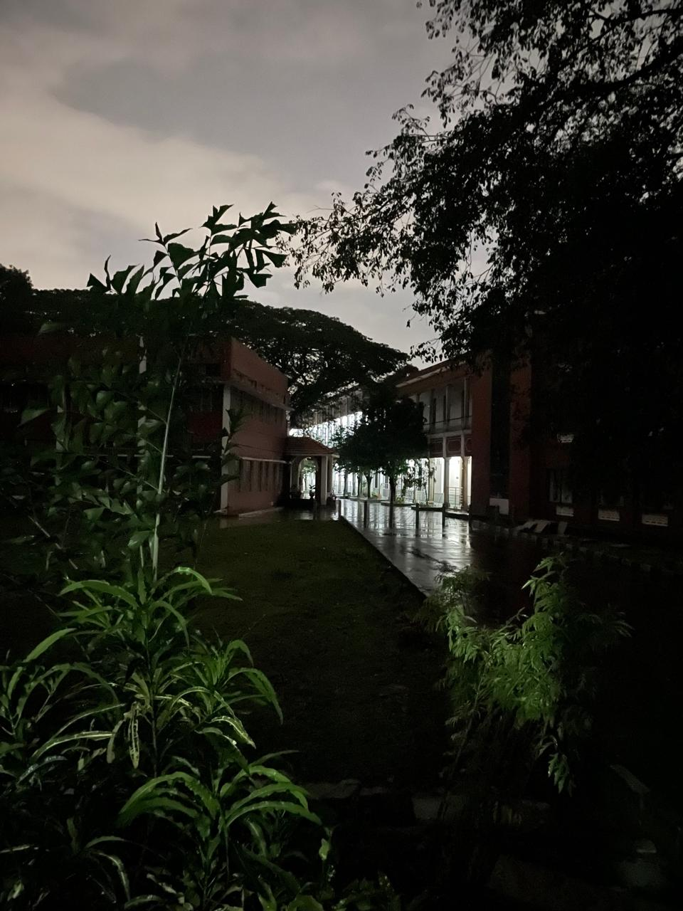
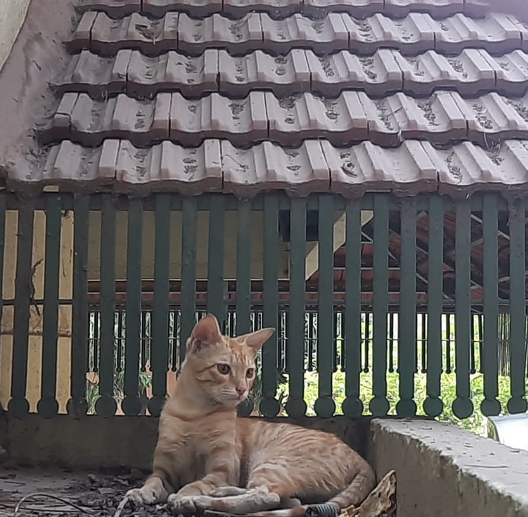
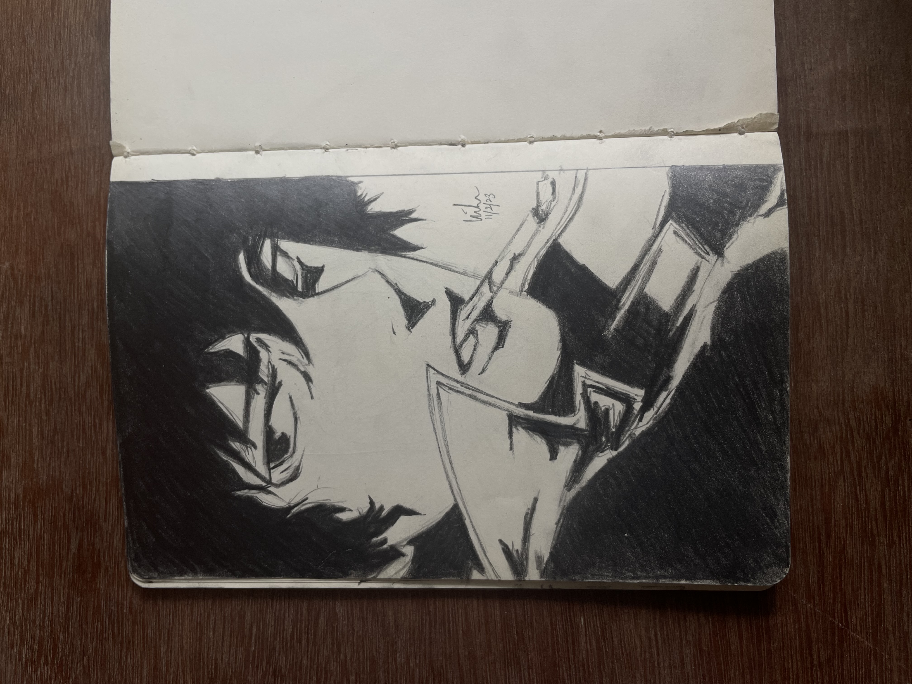

ABOUT ME

Art, philosophy, video games and cats.
BLOGS
PROJECTS
-
THE RABBIT HOLE
This is a Bandit-inspired CTF game with the theme of the Matrix made for users to get comfortable using Linux commands. It was made as a part of the SecureHack hackathon for Cybersecurity Month 2024. I used Docker to create containers for different levels for users to SSH into and gain access to the folders and find the hidden passwords! Huge thanks to my teammates for sticking with me through the bugs and making this cool website that acts as the entry point to this terminal game :D
GALLERY






